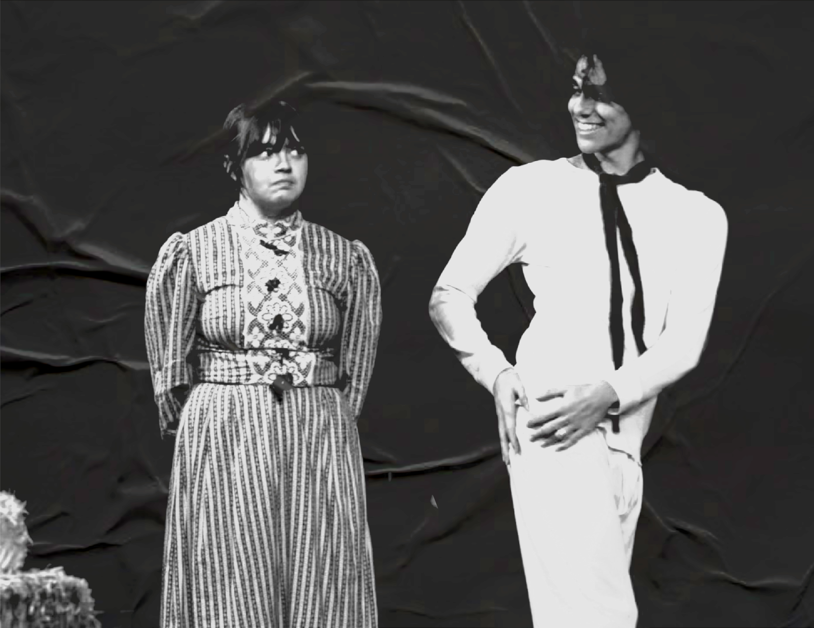
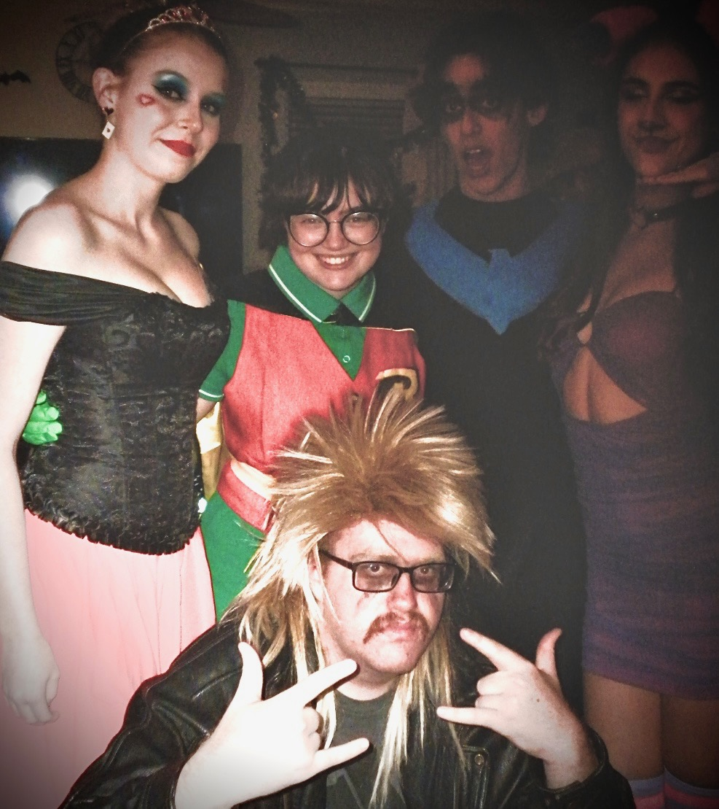
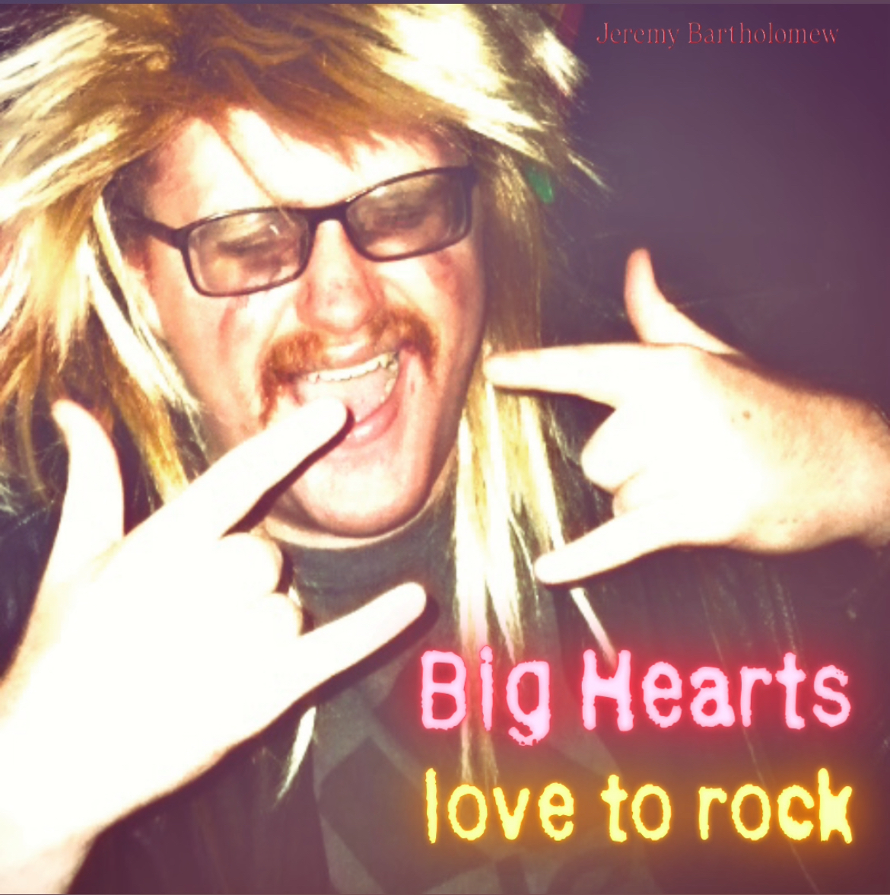
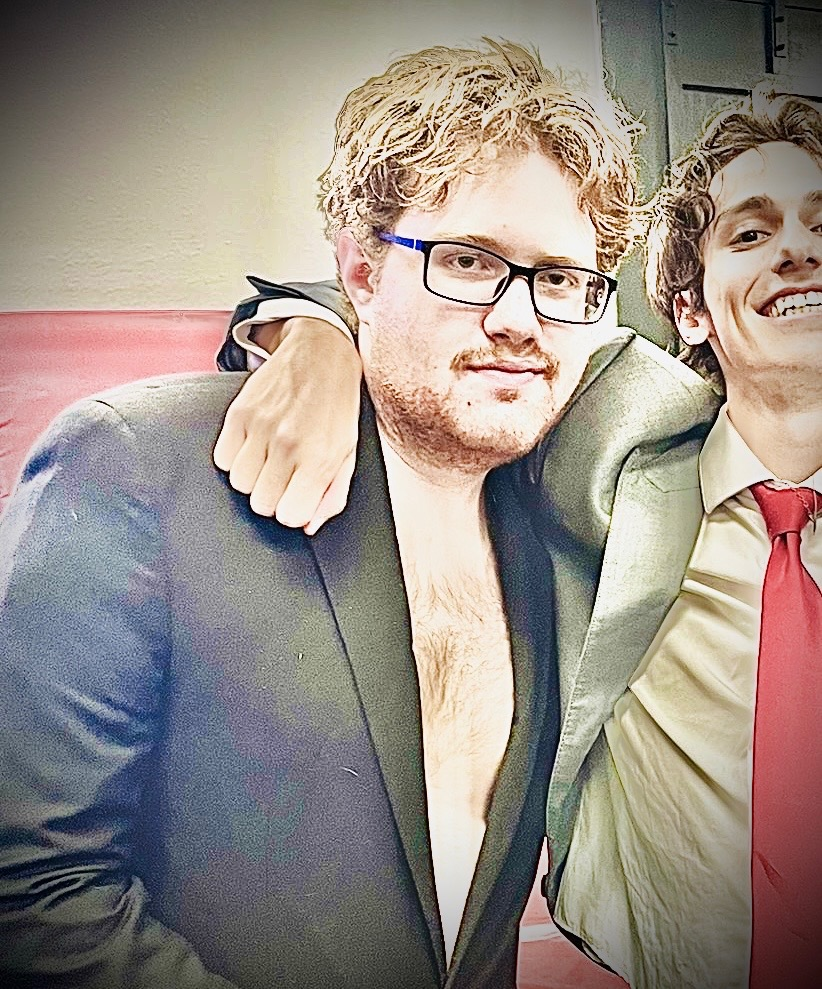
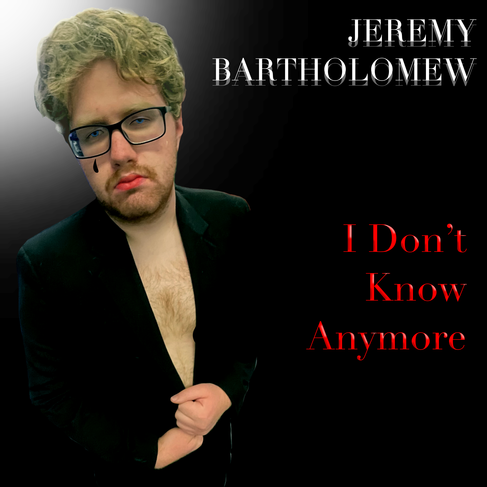
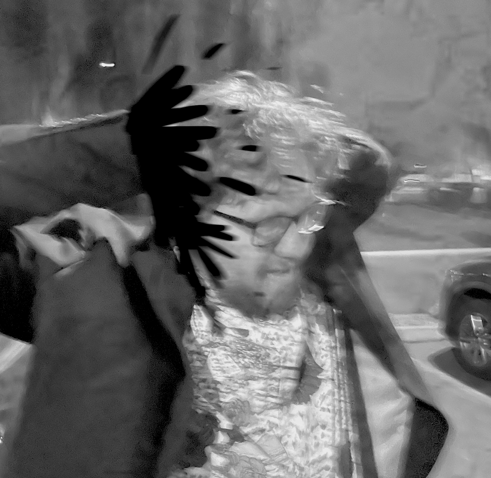

1980s Authentic Era
Early Life
Jeremy, born an unknown date in 1970, from a young age enjoyed music. His father, Frank Bartholomew, made guitars and his mother, Beverly Bartholomew, was an opera singer. While he didn't have a great relationship with his parents, he tried very very hard to earn their approval. He won his school talent show using one of his father guitars and his father's reaction was to lock the workshop where he made guitars so that Jeremy would never take a guitar without permission again.

Eventually, a 16-year-old Jeremy met the love of his life, Grisellida Whiskey (it is unknown whether this is a fake name as no one else has met her), and he always acknowledges her as his muse and the reason he made it out. Two days after he moved out and created a life for himself, his parent's house burnt to the ground. The crackling of the flames gave him inspiration for his first single.
First Releases
Jeremy wrote "My Parents Are On Fire" which was only him and his guitar, and it honestly sounded pretty terrible. He would play on the street outside rock shows trying to get anyone to listen. Eventually, a few other musicians heard his song and realized he just needed a full band in order to get the right sound. So they pitched themselves and started on the first album.

In 1987, Jeremy Bartholomew released the single "Crab Dance" which was widely and positively received. This gave him and his band hope for the guitar of their music. They finished their first album.
Big Hearts Love To Rock

The first album "Big Hearts Love To Rock" was a great hit featuring his first hit "Crab Dance". He was praised for his hardcore look and sound paired with his genuine lyrics of love and heartbreak, which he states were all about his mysterious girlfriend, Grisellida Whiskey. He was often seen at parties weeping.
1991 Sellout Era
Temporary Disappearance
Jeremy was no longer being seen at parties. People were starting to get concerned by this and wanted to know if Jeremy was okay. Interviews with band members say that whenever they would call him, only Grisellida Whiskey would answer and it just sounded like Jeremy speaking in a high-pitched voice.

Suddenly, in 1990 Jeremy reappeared with some news of getting signed to a record label. His persona changed drastically, to a more clean and professional look, leading people to wonder if they would ever get the same genuine Jeremy Bartholomew from Big Hearts Love To Rock again.

I Don't Know Anymore

He released his next album “I Don’t Know Anymore” in 1991 and had very mixed reviews. Many people thought he sold out but a few others thought that some of his songs still had that genuine Jeremy sound such as “Creepers Creeping”. Jeremy stopped being seen at parties and it was an official end of the “authentic era” for Jeremy.
Death and Aftermath
The Accident
In the middle of recording his third album, he was hit by a truck while leaving the recording studio, causing him to lose both of his ears and his hands. He released the unfinished version of his third and final album, “Tell Me How This Sounds”.

Tell Me How This Sounds

The fans sure did tell him how it sounds saying it was possibly the worst thing they had ever heard. The only song that got kind of a positive review was “Jeepers Jeeping” which is just because it was “Creepers Creeping” in a minor key.
Death
Shortly after this Jeremy Bartholomew passed away in his sleep, some say from a broken heart, some say from high cholesterol.
His music is no longer available anywhere, but his memory lives on in our hearts.